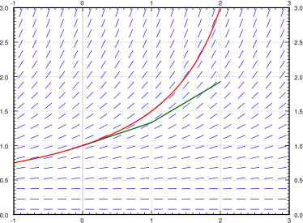

If the equation can be solved in closed form, we should do that. But what if we have an equation that cannot be solved in closed form? What if we want to find the value of the solution at some particular \(x\text{?}\) Or perhaps we want to produce a graph of the solution to inspect the behavior. In this section we will learn about the basics of numerical approximation of solutions.
The simplest method for approximating a solution is Euler’s method 1
Named after the Swiss mathematician Leonhard Paul Euler (1707–1783). The correct pronunciation of the name sounds more like “oiler.”
. It works as follows: Take \(x_0\) and \(y_0\) and compute the slope \(k = f(x_0,y_0)\text{.}\) The slope is the change in \(y\) per unit change in \(x\text{.}\) Follow the line for an interval of length \(h\) on the \(x\)-axis. We call \(h\) the step size. Hence if \(y = y_0\) at \(x_0\text{,}\) then we say that \(y_1\text{,}\) the approximate value of \(y\) at \(x_1 = x_0 + h\text{,}\) is \(y_1 = y_0 + h k\text{.}\) Rinse, repeat! Let \(k = f(x_1,y_1)\text{,}\) and then compute \(x_2 = x_1 + h\) and \(y_2 = y_1 + h k\text{.}\) Now compute \(x_3\) and \(y_3\) using \(x_2\) and \(y_2\text{,}\) etc. Consider the equation \(y' = \nicefrac{y^2}{3}\text{,}\)\(y(0)=1\text{,}\) and \(h=1\text{.}\) Then \(x_0=0\) and \(y_0 = 1\text{.}\) We compute
We draw an approximate graph of the solution by connecting the points \((x_0,y_0)\text{,}\)\((x_1,y_1)\text{,}\)\((x_2,y_2)\text{,....}\) See Figure 1.16 for the first two steps of the method.
The line segments we get are an approximate graph of the solution. In particular, \(y_i\) is the approximation of \(y(x_i)\text{.}\) Generally it is not exactly the solution. See Figure 1.17 for the plot of the real solution and the approximation.
Figure1.17.Two steps of Euler’s method (step size 1) and the exact solution for the equation \(y' = \frac{y^2}{3}\) with initial conditions \(y(0)=1\text{.}\)
We continue with the example \(y' = \nicefrac{y^2}{3}\text{,}\)\(y(0)=1\text{.}\) We have approximated \(y(2)\) with Euler’s method with step size 1. We conclude that \(y(2)\) is approximately \(y_2\text{,}\) that is, \(y(2) \approx 1.926\text{.}\) The real answer is 3. We are off by roughly 1.074. The difference between the actual solution and the approximate solution is called the error. We usually talk about the size of the error and we do not care much about its sign.
\begin{equation}
\text{Error} = \bigl\lvert \text{Actual } y - \text{Approximate } y
\bigr\rvert .
\end{equation}
We usually do not know the error exactly. If we knew the error exactly, we would know the actual solution ... so what is the point of doing the approximation?
Let us now halve the step size to \(h=0.5\) to, hopefully, improve the approximation. With half the step size, we do twice as many steps. Here, to find \(y(2)\text{,}\) we do 4 steps with \(h=0.5\) as then \(2 = x_4\text{.}\) Computing \(y_4\text{,}\) we find \(y(2) \approx 2.209\text{.}\) An error of about 0.791. Table 1.1 gives the values computed, for a few more halvings.
Note that except for the first few times, each time we halve the \(h\text{,}\) the error approximately halves. Halving of the error is a general feature of Euler’s method as it is a first-order method. A simple improvement of the Euler method, see the exercises, produces a second-order method. A second-order method reduces the error to approximately one quarter every time we halve the step size. The order being “second” means the squaring in \(\nicefrac{1}{4} = \nicefrac{1}{2} \times \nicefrac{1}{2}
= {(\nicefrac{1}{2})}^2\text{.}\)
To get the error to be less than 0.1, we did 64 steps. To get it below 0.01, we would have to halve another three or four times, doing 512 or 1024 steps. The improved Euler method from the exercises should quarter the error every time we halve the step size, so we would have to do (approximately) half as many “halvings” to get the same error. This reduction can be a big deal. With 10 halvings (starting at \(h=1\)) we have 1024 steps, whereas with 5 halvings we only have to do 32 steps, assuming that the error was comparable to start with. A computer may not care about this difference for a problem this simple, but suppose each step would take a second to compute (the function may be substantially more difficult to compute than \(\nicefrac{y^2}{3}\)). Then the difference is 32 seconds versus about 17 minutes. We are not being altogether fair; a second-order method would probably double the time to do each step. Even so, it is 1 minute versus 17 minutes. Next, suppose that we have to repeat such a calculation for different parameters a thousand times. You get the idea.
In practice, we do not know how large the error is! How do we know what is the right step size? One possibility is that we keep halving the step size, and if we are lucky, we can estimate the error from a few of these calculations and the assumption that the error halves each time (if we are using standard Euler).
In the table above, suppose you do not know the error. Take the approximate values of the function in the last two lines, assume that the error halves. Can you estimate the error in the last line from this information? Does it (approximately) agree with the table? Now do it for the first two rows. Does this agree with the table? Feel free to assume that the real value of \(y(2)\) is bigger than any of the approximate values, but you are not allowed to know the real value.
Let us talk a little bit more about the example \(y' = \nicefrac{y^2}{3}\text{,}\)\(y(0) = 1\text{.}\) Suppose that instead of \(y(2)\text{,}\) we wish to find \(y(3)\text{.}\)Table 1.2 lists the results of this effort for successive halvings of \(h\text{.}\) What is going on here? Well, you should solve the equation exactly and you will notice that the solution does not exist at \(x=3\text{.}\) In fact, the solution goes to infinity when you approach \(x=3\text{.}\)
Another case where things go bad is if the solution oscillates wildly near some point. The solution may exist at all points, but even a much better numerical method than Euler would need an insanely small step size to approximate the solution with reasonable precision. And computers might not be able to easily handle such a small step size.
In real applications, we would not use a simple method such as Euler’s. The simplest method one would probably use in a real application is the standard Runge–Kutta method (see exercises). That is a fourth-order method, meaning that if we halve the step size, the error gets multiplied by \(\nicefrac{1}{16}\) (it is fourth-order as \(\nicefrac{1}{16} =
\nicefrac{1}{2} \times \nicefrac{1}{2}
\times \nicefrac{1}{2} \times \nicefrac{1}{2}\)).
Computational time: Each step takes computer time. Even if the function \(f\) is simple to compute, we do it many times over. Large step size (fewer steps) means faster computation, but perhaps not the right precision.
Roundoff errors: Computers only compute with a certain number of significant digits. Errors introduced by rounding numbers during computations become noticeable when the step size becomes too small relative to the quantities we are working with. So reducing step size too much may make errors worse. There is a certain optimum step size where the precision increases as we approach it, but then starts getting worse as we make our step size smaller still. The trouble is that this optimum may be hard to find.
Stability: Certain equations may be numerically unstable. What may happen is that the numbers never seem to stabilize no matter how many times we halve the step size. We may need a ridiculously small step size, which may not be practical due to roundoff errors or computational time considerations. Such problems are sometimes called stiff. In the worst case, the numerical computations might be giving us bogus numbers that look like a correct answer. Just because the numbers seem to have stabilized after successive halving, does not mean that we must have the right answer.
We have seen just the beginnings of the challenges that appear in real applications. Numerical approximation of solutions to differential equations is an active research area for engineers and mathematicians. For example, the general purpose method used for the ODE solver in Matlab and Octave (as of this writing) is a method that appeared in the literature only in the 1980s.
Approximate the value of \(e\) by looking at the initial value problem \(y'=y\) with \(y(0)=1\) and approximating \(y(1)\) using Euler’s method with a step size of \(0.2\text{.}\)
Example of numerical instability: Take \(y' = -5y\text{,}\)\(y(0) = 1\text{.}\) We know that the solution should decay to zero as \(x\) grows. Using Euler’s method, start with \(h=1\) and compute \(y_1, y_2, y_3, y_4\) to try to approximate \(y(4)\text{.}\) What happened? Now halve the step size. Keep halving the step size and approximating \(y(4)\) until the numbers you are getting start to stabilize (that is, until they start going towards zero). Note: You might want to use a calculator.
The simplest method used in practice is the Runge–Kutta method. Consider \(\frac{dy}{dx}=f(x,y)\text{,}\)\(y(x_0) = y_0\text{,}\) and a step size \(h\text{.}\) Everything is the same as in Euler’s method, except the computation of \(y_{i+1}\) and \(x_{i+1}\text{.}\) That is, in each step we compute slopes \(k_1\text{,}\)\(k_2\text{,}\)\(k_3\text{,}\) and \(k_4\text{,}\) and then we compute the next \(x_{i+1}\) and \(y_{i+1}\text{:}\)
Let \(x' = \sin(xt)\text{,}\) and \(x(0)=1\text{.}\) Approximate \(x(1)\) using Euler’s method with step sizes 1, 0.5, 0.25. Use a calculator and compute up to 4 decimal digits.
There is a simple way to improve Euler’s method to make it a second-order method by doing just one extra step. Consider \(\frac{dy}{dx}=f(x,y)\text{,}\)\(y(x_0) = y_0\text{,}\) and a step size \(h\text{.}\) What we do is to pretend we compute the next step as in Euler, that is, we start with \((x_i,y_i)\text{,}\) we compute a slope \(k_1 = f(x_i,y_i)\text{,}\) and then look at the point \((x_i+h,y_i + k_1h)\text{.}\) Instead of letting our new point be \((x_i+h,y_i + k_1h)\text{,}\) we compute the slope at that point, call it \(k_2\text{,}\) and then take the average of \(k_1\) and \(k_2\text{,}\) hoping that the average is going to be closer to the actual slope on the interval from \(x_i\) to \(x_i+h\text{.}\) And we are correct, if we halve the step, the error should get multiplied by \({(\nicefrac{1}{2})}^2 = \nicefrac{1}{4}\text{.}\) To summarize, the setup is the same as for regular Euler, except the computation of \(y_{i+1}\) and \(x_{i+1}\text{.}\) At each step, we compute the new slopes \(k_1\) and \(k_2\) and then the next \(y_{i+1}\) and \(x_{i+1}\text{:}\)
a) Improved Euler: \(y(1) \approx 3.3897\) for \(h=\nicefrac{1}{4}\text{,}\)\(y(1) \approx 3.4237\) for \(h=\nicefrac{1}{8}\text{,}\) b) Standard Euler: \(y(1) \approx 2.8828\) for \(h=\nicefrac{1}{4}\text{,}\)\(y(1) \approx 3.1316\) for \(h=\nicefrac{1}{8}\text{,}\) c) \(y = 2e^x-x-1\text{,}\) so \(y(1)\) is approximately \(3.4366\text{.}\) d) Approximate errors for improved Euler: \(0.046852\) for \(h=\nicefrac{1}{4}\) and \(0.012881\) for \(h=\nicefrac{1}{8}\text{.}\) For standard Euler: \(0.55375\) for \(h=\nicefrac{1}{4}\) and \(0.30499\) for \(h=\nicefrac{1}{8}\text{.}\) Factor is approximately \(0.27\) for improved Euler and \(0.55\) for standard Euler.